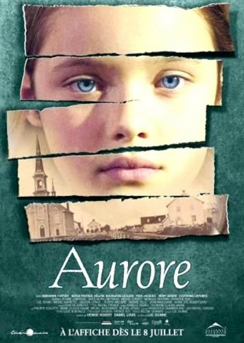

aurore
1909 წელი. სოფელში სახელწოდებით სენტ - ფელომენ - დე - ფორტევილ მერი-ენ კარონისა და ტელესფორ ჰანიონის ოჯახში მეორე გოგონა - ავრორა დაიბადება. ბავშვი ბედნიერ და ...
link1909 წელი. სოფელში სახელწოდებით სენტ - ფელომენ - დე - ფორტევილ მერი-ენ კარონისა და ტელესფორ ჰანიონის ოჯახში მეორე გოგონა - ავრორა დაიბადება. ბავშვი ბედნიერ და ...
linkმეხუთე კლასელის ჯესსა აირონის იმედები გახდეს ყველაზე სწრაფი მორბენალი დაიმსხვრა იმის მერე, რაც ახალმა მოსწავლემ ლესლი ბერკმა გაიმარჯვა შეჯიბრებებზე. მიზეზები იმისთვის, რომ ერთმანეთის მიმართ მტრულად განეწონ არ ამოილევა, და ყველაფრის მიუხედავათ ისინი დამეგობრებას ახერხებენ.როგორ არ უნდა დამეგობრდნენ, თუ ტყეში ნაპოვნ ჯადოსნურ სამეფოში მეფე დედოფლად უწევთ ყოფნა?
linkისტორია, რომელიც მეორე მსოფლიო ომის დროს ხდება და ნაჩვენებია უდანაშაულო და არაფრის აზრზე მყოფი ბრუნოს – საკონცენტრაციო ბანაკის კომენდანტის შვილის თვალებით. შემთხვევითი გაცნობა და მეგობრება ებრაელ ბიჭთან წარმოუდგენელ და საშინელ შედეგებს გამოიწვევს...
linkერთ სკოლაში ახალი მოსწავლე გადმოვა – თნეიჯერი სახელად დენიელი. ის ჩამოვიდა აღმოსავლეთის სანაპიროდან თავის დედასთან ერთად. რთლია მეგობრების გაჩენა ახალ ადგილას, სადაც არავის იცნობ...
linkმეექვსე კლასელი აკი ნამდვილი ხულიგანია,მას უყვარს ფეხბურთი,ბიჭებთან ბრძოლა და არაფრის არ ეშინია,გარდა სიყვარულისა.როდესაც მას დაუსვამენ დიაგნოზს ლეიკემიას,სწორედ სიყვარული აძლევს ძალას რათა შეებრძოლოს დაავადებას..
link